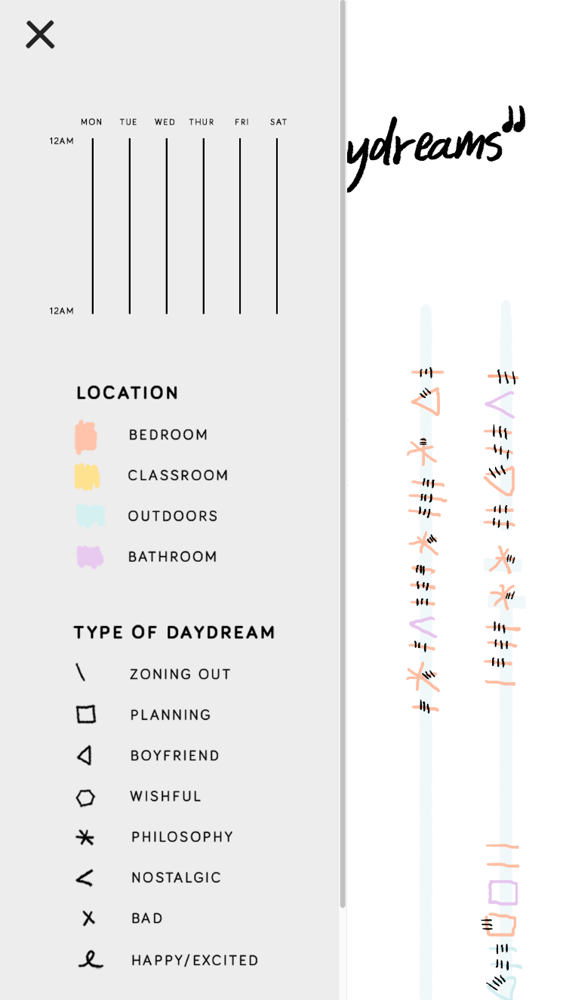

Track
Project Description
We were assigned the task of tracking and visualizing some form of personal data about ourselves. The data would be collected over the course of one week. I chose to track my daydreams because I felt like I was constantly zoning out during an average day.
Data Collection
I came up with a list of questions to ask myself every time I caught myself in a daydream:
What time of day do I daydream the most?
How long do I daydream?
Where am I when I daydream?
What am I daydreaming about?
Who am I with?
Am I daydreaming on purpose, or because I’m bored, or distracted? The reason for daydreaming.
How am I feeling? Anxious? Stressed? Worried? Thoughtful?
How long d o I allow myself to daydream? Am I pulling out because someone popped my bubble, or because I thought I needed to record it, or from natural purposes?
I soon realized I was zoning out
every ten minutes!!
First Visualization
I received feedback saying there were too many missing data points -- like the rotation and length and position of the symbols didn't have any meaning.
Second Visualization
I decided to remake my visualization by organizing the data by day and time. Each horizontal string of symbols represents a day, and the symbols are arranged in chronological order of when I had the daydream.
Mobile Visualization
We were then tasked to represent our data on a mobile screen. You can view the site on your phone by clicking
here.

The layout of the visualization is now oriented vertically. I made a sticky menu on the top left corner so that when the user scrolls down the visualization,
they are able to easily click on the button and reference the legend. The legend follows the user as they scroll down the page, and can be closed or opened at any time.
I also re-imagined the layout to have a sticky menu at the top that can be opened or closed at any time, and follows the user down the visualization for easy reference.